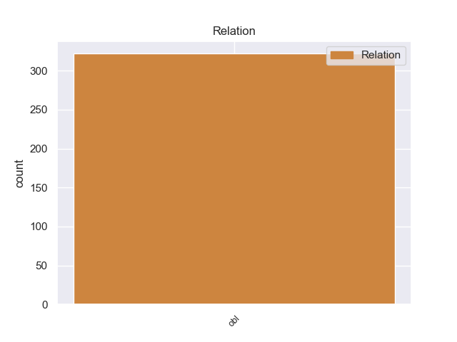
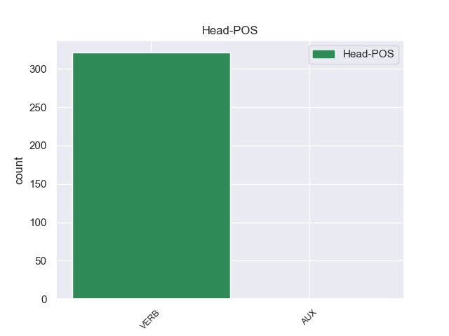
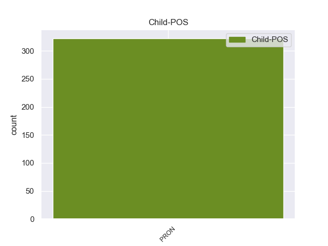

Distribution of features within this leaf



Morphosyntax Rules sorted by frequency.
- When the dependent token is the oblique nominal(obl) of the head token, the Case needs to be Acc,Nom.
1 Por _ _ _ _ 0 _ _ _
2 ello él PRON _ Case=Acc,Nom|Gender=Masc|Number=Sing|Person=3|PronType=Prs 8 obl _ _
3 cada _ _ _ _ 0 _ _ _
4 vez _ _ _ _ 0 _ _ _
5 más _ _ _ _ 0 _ _ _
6 españoles _ _ _ _ 0 _ _ _
7 están _ _ _ _ 0 _ _ _
8 optando optar VERB _ VerbForm=Ger 0 _ _ _
9 por _ _ _ _ 0 _ _ _
10 unas _ _ _ _ 0 _ _ _
11 vacaciones _ _ _ _ 0 _ _ _
12 inteligentes _ _ _ _ 0 _ _ _
13 que _ _ _ _ 0 _ _ _
14 implican _ _ _ _ 0 _ _ _
15 viajes _ _ _ _ 0 _ _ _
16 , _ _ _ _ 0 _ _ _
17 visitas _ _ _ _ 0 _ _ _
18 turísticas _ _ _ _ 0 _ _ _
19 y _ _ _ _ 0 _ _ _
20 culturales _ _ _ _ 0 _ _ _
21 y _ _ _ _ 0 _ _ _
22 otras _ _ _ _ 0 _ _ _
23 actividades _ _ _ _ 0 _ _ _
24 de _ _ _ _ 0 _ _ _
25 ocio _ _ _ _ 0 _ _ _
26 con _ _ _ _ 0 _ _ _
27 el _ _ _ _ 0 _ _ _
28 aprendizaje _ _ _ _ 0 _ _ _
29 de _ _ _ _ 0 _ _ _
30 un _ _ _ _ 0 _ _ _
31 idioma _ _ _ _ 0 _ _ _
32 . _ _ _ _ 0 _ _ _
non-conforming Examples:
1 Aun _ _ _ _ 0 _ _ _
2 así _ _ _ _ 0 _ _ _
3 , _ _ _ _ 0 _ _ _
4 si _ _ _ _ 0 _ _ _
5 comparamos comparar VERB _ Mood=Ind|Number=Plur|Person=1|Tense=Pres|VerbForm=Fin 0 _ _ _
6 esta _ _ _ _ 0 _ _ _
7 densidad _ _ _ _ 0 _ _ _
8 con _ _ _ _ 0 _ _ _
9 la él PRON _ Case=Acc|Gender=Fem|Number=Sing|Person=3|PrepCase=Npr|PronType=Prs 5 obl _ _
10 de _ _ _ _ 0 _ _ _
11 el _ _ _ _ 0 _ _ _
12 plomo _ _ _ _ 0 _ _ _
13 , _ _ _ _ 0 _ _ _
14 de _ _ _ _ 0 _ _ _
15 unos _ _ _ _ 0 _ _ _
16 11 _ _ _ _ 0 _ _ _
17 g _ _ _ _ 0 _ _ _
18 / _ _ _ _ 0 _ _ _
19 cm _ _ _ _ 0 _ _ _
20 ³ _ _ _ _ 0 _ _ _
21 , _ _ _ _ 0 _ _ _
22 vemos _ _ _ _ 0 _ _ _
23 que _ _ _ _ 0 _ _ _
24 representa _ _ _ _ 0 _ _ _
25 una _ _ _ _ 0 _ _ _
26 considerable _ _ _ _ 0 _ _ _
27 compresión _ _ _ _ 0 _ _ _
28 , _ _ _ _ 0 _ _ _
29 sobre _ _ _ _ 0 _ _ _
30 todo _ _ _ _ 0 _ _ _
31 cuando _ _ _ _ 0 _ _ _
32 se _ _ _ _ 0 _ _ _
33 considera _ _ _ _ 0 _ _ _
34 que _ _ _ _ 0 _ _ _
35 en _ _ _ _ 0 _ _ _
36 el _ _ _ _ 0 _ _ _
37 interior _ _ _ _ 0 _ _ _
38 de _ _ _ _ 0 _ _ _
39 el _ _ _ _ 0 _ _ _
40 blanco _ _ _ _ 0 _ _ _
41 tenemos _ _ _ _ 0 _ _ _
42 unas _ _ _ _ 0 _ _ _
43 densidades _ _ _ _ 0 _ _ _
44 iniciales _ _ _ _ 0 _ _ _
45 de _ _ _ _ 0 _ _ _
46 de _ _ _ _ 0 _ _ _
47 unos _ _ _ _ 0 _ _ _
48 0,1 _ _ _ _ 0 _ _ _
49 g _ _ _ _ 0 _ _ _
50 / _ _ _ _ 0 _ _ _
51 cm _ _ _ _ 0 _ _ _
52 ³ _ _ _ _ 0 _ _ _
53 de _ _ _ _ 0 _ _ _
54 DT _ _ _ _ 0 _ _ _
55 . _ _ _ _ 0 _ _ _
1 Todos _ _ _ _ 0 _ _ _
2 estos _ _ _ _ 0 _ _ _
3 planes _ _ _ _ 0 _ _ _
4 no _ _ _ _ 0 _ _ _
5 han _ _ _ _ 0 _ _ _
6 gustado _ _ _ _ 0 _ _ _
7 a _ _ _ _ 0 _ _ _
8 la _ _ _ _ 0 _ _ _
9 vecina _ _ _ _ 0 _ _ _
10 Vietnam _ _ _ _ 0 _ _ _
11 , _ _ _ _ 0 _ _ _
12 ya _ _ _ _ 0 _ _ _
13 que _ _ _ _ 0 _ _ _
14 el _ _ _ _ 0 _ _ _
15 plan _ _ _ _ 0 _ _ _
16 incluye _ _ _ _ 0 _ _ _
17 el _ _ _ _ 0 _ _ _
18 desarrollo _ _ _ _ 0 _ _ _
19 de _ _ _ _ 0 _ _ _
20 un _ _ _ _ 0 _ _ _
21 pequeño _ _ _ _ 0 _ _ _
22 archipiélago _ _ _ _ 0 _ _ _
23 en _ _ _ _ 0 _ _ _
24 mitad _ _ _ _ 0 _ _ _
25 de _ _ _ _ 0 _ _ _
26 los _ _ _ _ 0 _ _ _
27 300 _ _ _ _ 0 _ _ _
28 kilómetros _ _ _ _ 0 _ _ _
29 que _ _ _ _ 0 _ _ _
30 separan separar VERB _ Mood=Ind|Number=Plur|Person=3|Tense=Pres|VerbForm=Fin 0 _ _ _
31 las _ _ _ _ 0 _ _ _
32 costas _ _ _ _ 0 _ _ _
33 vietnamitas _ _ _ _ 0 _ _ _
34 de _ _ _ _ 0 _ _ _
35 las él PRON _ Case=Acc|Gender=Fem|Number=Plur|Person=3|PrepCase=Npr|PronType=Prs 30 obl _ _
36 de _ _ _ _ 0 _ _ _
37 el _ _ _ _ 0 _ _ _
38 oeste _ _ _ _ 0 _ _ _
39 de _ _ _ _ 0 _ _ _
40 Hainan _ _ _ _ 0 _ _ _
41 , _ _ _ _ 0 _ _ _
42 las _ _ _ _ 0 _ _ _
43 islas _ _ _ _ 0 _ _ _
44 Paracelso _ _ _ _ 0 _ _ _
45 . _ _ _ _ 0 _ _ _
1 También _ _ _ _ 0 _ _ _
2 merece _ _ _ _ 0 _ _ _
3 la _ _ _ _ 0 _ _ _
4 pena _ _ _ _ 0 _ _ _
5 destacar _ _ _ _ 0 _ _ _
6 su _ _ _ _ 0 _ _ _
7 servicio _ _ _ _ 0 _ _ _
8 de _ _ _ _ 0 _ _ _
9 catering _ _ _ _ 0 _ _ _
10 y _ _ _ _ 0 _ _ _
11 comidas _ _ _ _ 0 _ _ _
12 preparadas _ _ _ _ 0 _ _ _
13 , _ _ _ _ 0 _ _ _
14 por _ _ _ _ 0 _ _ _
15 un _ _ _ _ 0 _ _ _
16 módico _ _ _ _ 0 _ _ _
17 precio _ _ _ _ 0 _ _ _
18 te _ _ _ _ 0 _ _ _
19 preparan _ _ _ _ 0 _ _ _
20 una _ _ _ _ 0 _ _ _
21 comida _ _ _ _ 0 _ _ _
22 en _ _ _ _ 0 _ _ _
23 que _ _ _ _ 0 _ _ _
24 los _ _ _ _ 0 _ _ _
25 todos _ _ _ _ 0 _ _ _
26 los _ _ _ _ 0 _ _ _
27 comensales _ _ _ _ 0 _ _ _
28 se _ _ _ _ 0 _ _ _
29 van _ _ _ _ 0 _ _ _
30 a _ _ _ _ 0 _ _ _
31 chupar _ _ _ _ 0 _ _ _
32 los _ _ _ _ 0 _ _ _
33 dedos _ _ _ _ 0 _ _ _
34 , _ _ _ _ 0 _ _ _
35 y _ _ _ _ 0 _ _ _
36 su _ _ _ _ 0 _ _ _
37 mayor _ _ _ _ 0 _ _ _
38 virtud _ _ _ _ 0 _ _ _
39 es _ _ _ _ 0 _ _ _
40 el _ _ _ _ 0 _ _ _
41 gusto _ _ _ _ 0 _ _ _
42 que _ _ _ _ 0 _ _ _
43 ponen poner VERB _ Mood=Ind|Number=Plur|Person=3|Tense=Pres|VerbForm=Fin 0 _ _ _
44 en _ _ _ _ 0 _ _ _
45 todo _ _ _ _ 0 _ _ _
46 lo él PRON _ Case=Acc|Gender=Masc|Number=Sing|Person=3|PrepCase=Npr|PronType=Prs 43 obl _ _
47 que _ _ _ _ 0 _ _ _
48 hacen _ _ _ _ 0 _ _ _
49 . _ _ _ _ 0 _ _ _
1 A _ _ _ _ 0 _ _ _
2 la _ _ _ _ 0 _ _ _
3 hora _ _ _ _ 0 _ _ _
4 de _ _ _ _ 0 _ _ _
5 poner _ _ _ _ 0 _ _ _
6 en _ _ _ _ 0 _ _ _
7 orden _ _ _ _ 0 _ _ _
8 los _ _ _ _ 0 _ _ _
9 deslavazados _ _ _ _ 0 _ _ _
10 datos _ _ _ _ 0 _ _ _
11 que _ _ _ _ 0 _ _ _
12 nos _ _ _ _ 0 _ _ _
13 han _ _ _ _ 0 _ _ _
14 llegado _ _ _ _ 0 _ _ _
15 de _ _ _ _ 0 _ _ _
16 el _ _ _ _ 0 _ _ _
17 nacimiento _ _ _ _ 0 _ _ _
18 y _ _ _ _ 0 _ _ _
19 desenvolvimiento _ _ _ _ 0 _ _ _
20 de _ _ _ _ 0 _ _ _
21 la _ _ _ _ 0 _ _ _
22 antigua _ _ _ _ 0 _ _ _
23 Hermandad _ _ _ _ 0 _ _ _
24 de _ _ _ _ 0 _ _ _
25 la _ _ _ _ 0 _ _ _
26 Vera _ _ _ _ 0 _ _ _
27 - _ _ _ _ 0 _ _ _
28 Cruz _ _ _ _ 0 _ _ _
29 de _ _ _ _ 0 _ _ _
30 Arahal _ _ _ _ 0 _ _ _
31 , _ _ _ _ 0 _ _ _
32 y _ _ _ _ 0 _ _ _
33 convertir _ _ _ _ 0 _ _ _
34 éstos _ _ _ _ 0 _ _ _
35 en _ _ _ _ 0 _ _ _
36 hitos _ _ _ _ 0 _ _ _
37 entre _ _ _ _ 0 _ _ _
38 los _ _ _ _ 0 _ _ _
39 cuales _ _ _ _ 0 _ _ _
40 en _ _ _ _ 0 _ _ _
41 tiempo _ _ _ _ 0 _ _ _
42 venideros _ _ _ _ 0 _ _ _
43 , _ _ _ _ 0 _ _ _
44 podamos _ _ _ _ 0 _ _ _
45 intercalar _ _ _ _ 0 _ _ _
46 los _ _ _ _ 0 _ _ _
47 que _ _ _ _ 0 _ _ _
48 nos _ _ _ _ 0 _ _ _
49 ofrezca _ _ _ _ 0 _ _ _
50 una _ _ _ _ 0 _ _ _
51 posterior _ _ _ _ 0 _ _ _
52 investigación _ _ _ _ 0 _ _ _
53 , _ _ _ _ 0 _ _ _
54 nos _ _ _ _ 0 _ _ _
55 hemos _ _ _ _ 0 _ _ _
56 encontrado encontrar VERB _ Gender=Masc|Number=Sing|Tense=Past|VerbForm=Part 0 _ _ _
57 con _ _ _ _ 0 _ _ _
58 que _ _ _ _ 0 _ _ _
59 , _ _ _ _ 0 _ _ _
60 hasta _ _ _ _ 0 _ _ _
61 ahora _ _ _ _ 0 _ _ _
62 , _ _ _ _ 0 _ _ _
63 y _ _ _ _ 0 _ _ _
64 quizá _ _ _ _ 0 _ _ _
65 debido _ _ _ _ 0 _ _ _
66 a _ _ _ _ 0 _ _ _
67 el _ _ _ _ 0 _ _ _
68 tiempo _ _ _ _ 0 _ _ _
69 que _ _ _ _ 0 _ _ _
70 hace _ _ _ _ 0 _ _ _
71 que _ _ _ _ 0 _ _ _
72 dicha _ _ _ _ 0 _ _ _
73 cofradía _ _ _ _ 0 _ _ _
74 no _ _ _ _ 0 _ _ _
75 tiene _ _ _ _ 0 _ _ _
76 vida _ _ _ _ 0 _ _ _
77 , _ _ _ _ 0 _ _ _
78 es _ _ _ _ 0 _ _ _
79 la él PRON _ Case=Acc|Gender=Fem|Number=Sing|Person=3|PrepCase=Npr|PronType=Prs 56 obl _ _
80 de _ _ _ _ 0 _ _ _
81 esta _ _ _ _ 0 _ _ _
82 ciudad _ _ _ _ 0 _ _ _
83 a _ _ _ _ 0 _ _ _
84 la _ _ _ _ 0 _ _ _
85 que _ _ _ _ 0 _ _ _
86 se _ _ _ _ 0 _ _ _
87 le _ _ _ _ 0 _ _ _
88 ha _ _ _ _ 0 _ _ _
89 dedicado _ _ _ _ 0 _ _ _
90 menos _ _ _ _ 0 _ _ _
91 estudio _ _ _ _ 0 _ _ _
92 , _ _ _ _ 0 _ _ _
93 o _ _ _ _ 0 _ _ _
94 si _ _ _ _ 0 _ _ _
95 se _ _ _ _ 0 _ _ _
96 le _ _ _ _ 0 _ _ _
97 ha _ _ _ _ 0 _ _ _
98 hecho _ _ _ _ 0 _ _ _
99 , _ _ _ _ 0 _ _ _
100 desgraciadamente _ _ _ _ 0 _ _ _
101 no _ _ _ _ 0 _ _ _
102 nos _ _ _ _ 0 _ _ _
103 es _ _ _ _ 0 _ _ _
104 conocido _ _ _ _ 0 _ _ _
105 . _ _ _ _ 0 _ _ _
1 Esta _ _ _ _ 0 _ _ _
2 idea _ _ _ _ 0 _ _ _
3 corresponde _ _ _ _ 0 _ _ _
4 bastante _ _ _ _ 0 _ _ _
5 a _ _ _ _ 0 _ _ _
6 la _ _ _ _ 0 _ _ _
7 etimología _ _ _ _ 0 _ _ _
8 de _ _ _ _ 0 _ _ _
9 el _ _ _ _ 0 _ _ _
10 nombre _ _ _ _ 0 _ _ _
11 pero _ _ _ _ 0 _ _ _
12 se _ _ _ _ 0 _ _ _
13 concilia conciliar VERB _ Mood=Ind|Number=Sing|Person=3|Tense=Pres|VerbForm=Fin 0 _ _ _
14 mal _ _ _ _ 0 _ _ _
15 con _ _ _ _ 0 _ _ _
16 lo él PRON _ Case=Acc|Gender=Masc|Number=Sing|Person=3|PrepCase=Npr|PronType=Prs 13 obl _ _
17 que _ _ _ _ 0 _ _ _
18 dice _ _ _ _ 0 _ _ _
19 San _ _ _ _ 0 _ _ _
20 Gregorio _ _ _ _ 0 _ _ _
21 . _ _ _ _ 0 _ _ _